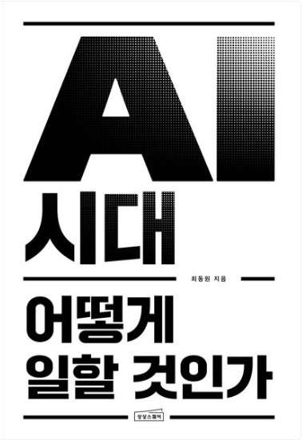

교보문고에서 확인하기 ↗
기본기 & 본질
AI 시대 어떻게 일할 것인가
📌 어떤 책인가요?
"AI한테 시켜서 멋진 앱이나 게임을 5분 만에 완성하면 순간 내가 천재 개발자가 된 것 같은 기분이 들 거야. 이걸 이 책에서는 ‘생산성의 착시 현상’이라고 불러. 도구가 좋은 건데 내 실력으로 착각하게 된다는 거지. 편리함에 취해 복사·붙여넣기만 하다 보면 생각하는 근육이 다 녹아내릴지도 몰라. 이 책은 기술의 화려한 겉모습에 속지 않고, 나만의 '진짜 실력'과 무기를 단단하게 지켜내는 영리한 생존법을 담고 있어."
🙋 이런 친구들에게 추천해요!
- • 복사·붙여넣기 중독형: 에러가 나면 스스로 고민하기보다 무조건 AI한테 "다시 짜줘"라고만 하며 깊이 생각하기를 귀찮아하는 학생
- • 미래 불안형 평범이: "어차피 AI가 다 하는데 내가 공부를 더 해서 뭐 하나"라는 생각에 빠져 진로나 학업 동기를 잃어가는 학생
- • 성실한 노력파: 요령 피우지 않고 기본기부터 탄탄하게 쌓아서 AI 시대에도 대체 불가능한 '찐 전문가'가 되고 싶은 학생